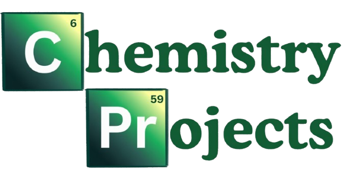
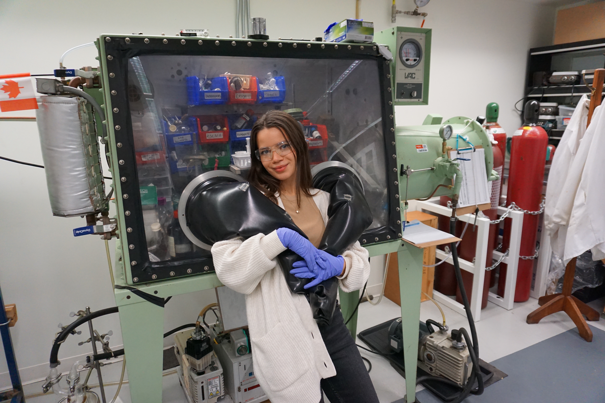
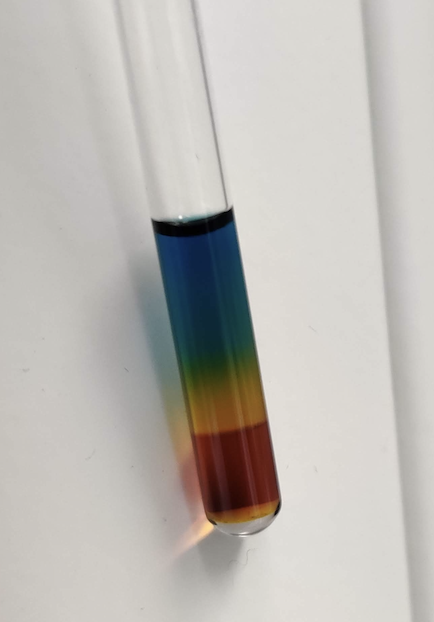
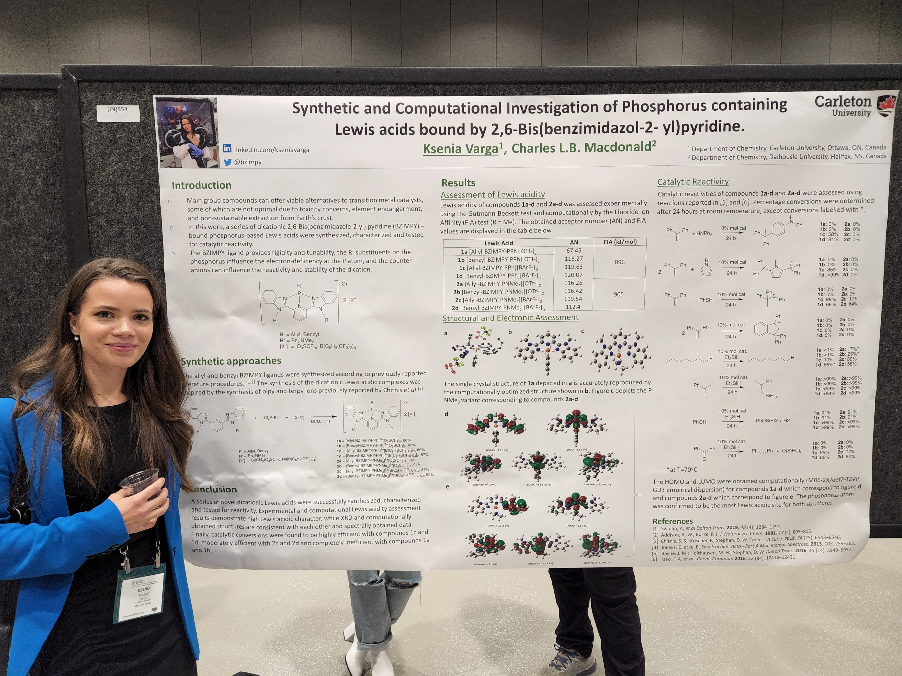
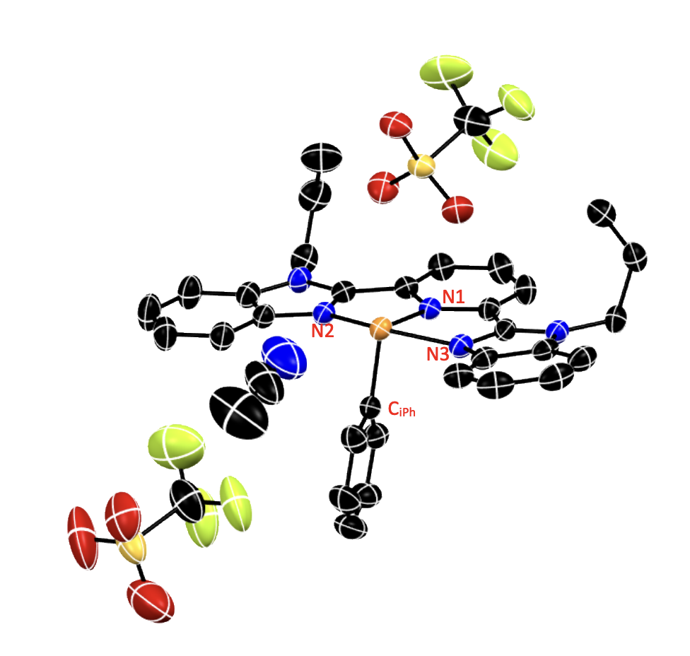
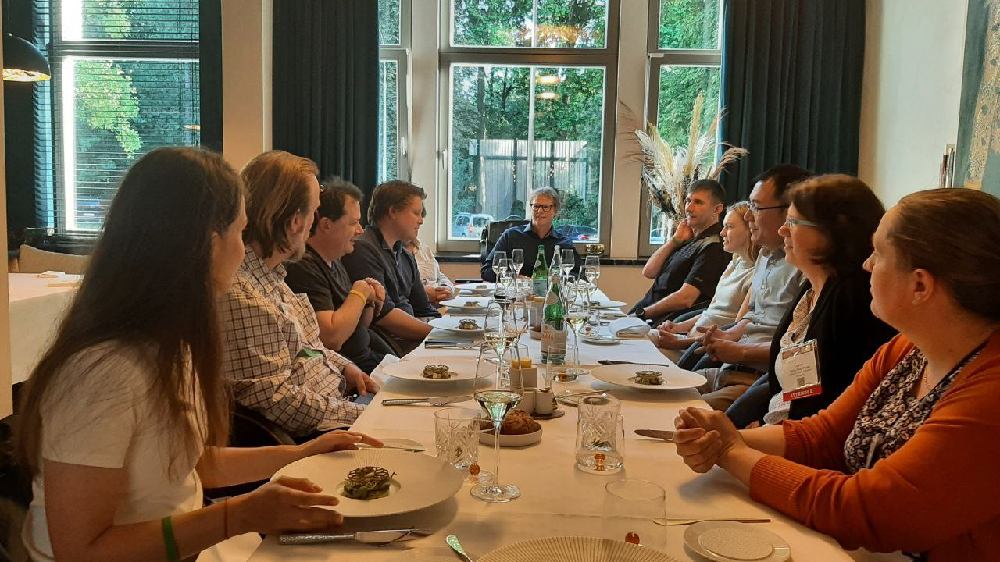

I trained as an inorganic synthetic chemist with a focus on main-group chemistry. My graduate research combined synthetic and computational methods to investigate phosphorus-based Lewis acid catalysis and their reactivity toward small molecules—transformations that lie at the heart of major industrial processes such as catalytic hydrogenations and the activation of gases like hydrogen or carbon dioxide.

Figure 1: Beauty and the beast (which one is which - depended on the day)



Figure 2: (a) NMR tube of my decomposing compound (bad) in a cool rainbow (good), (b) presenting the results of my research at CSC 2022 in Calgary. (c) XRD of one of my compounds - hydrogen atoms omitted for clarity. ACN (MeCN) solvent is included to show proximity to cation

I was co-supervised by Dr. Sean Barry, a leading researcher in atomic layer deposition (ALD). This introduced me to surface chemistry, precursor design, and synthesis, and connected me to the broader ALD community. I contributed to the creation of the Atomic Layer Deposition Community website and the Open-Diamond Academic Journal.
Since moving into semiconductors, I continue to follow ALD chemistry and its growing role in the industry.
Other Chemistry Experiences
- National Research Council of Canada — Analytical chemist analyzing indoor air samples by HPLC and GC-MS. Additional projects included digitizing the chemical inventory, investigating chemical effects of building materials, and literature screening for a mould laboratory.
- Freelance (Upwork)
- Formula optimization for a Canadian sparkling beverage company (carbonation vs. packaging integrity)
- Emulsifier optimization and product formulation for a clean skincare startup
- Chemistry Magic Show (Carleton University) — Annual public outreach event sharing chemistry demonstrations with children and adults. Featured in Carleton’s Science magazine (Eureka!).